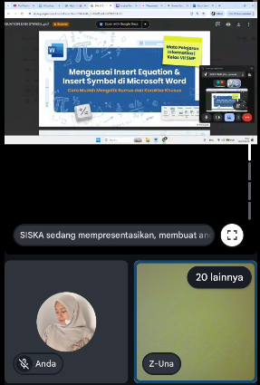

Konteks
RPP mengacu pada Kurikulum Merdeka dengan pendekatan deep learning yang menekankan pengalaman belajar bermakna melalui praktik langsung serta keterkaitan dengan kebutuhan nyata dalam pembuatan dokumen sehari-hari.
📚 SEMESTER 1 • PPL TERBIMBING
Dokumentasi pelaksanaan PPL Terbimbing Siklus 3 yang memuat perangkat pembelajaran, aktivitas pembelajaran, hasil kerja peserta didik, media pembelajaran, dan dokumentasi penilaian.
TENTANG SIKLUS 3
Halaman ini menyajikan dokumentasi dan analisis artefak pembelajaran yang digunakan dalam pelaksanaan PPL Terbimbing Siklus 3.
Pada Siklus 3, berbagai perangkat dan media pembelajaran disiapkan sebagai bagian dari proses perencanaan, pelaksanaan, dan evaluasi pembelajaran. Setiap artefak di bawah ini dilengkapi dengan penjelasan singkat untuk memberikan konteks terhadap dokumen yang digunakan.
RPP mengacu pada Kurikulum Merdeka dengan pendekatan deep learning yang menekankan pengalaman belajar bermakna melalui praktik langsung serta keterkaitan dengan kebutuhan nyata dalam pembuatan dokumen sehari-hari.
Peserta didik mampu menyisipkan gambar (Insert Picture), bentuk (Shapes), dan WordArt ke dalam dokumen, serta mengatur ukuran, posisi, dan tata letak agar dokumen terlihat rapi, menarik, dan mudah dibaca.
Pembelajaran berbasis praktik membuat peserta didik lebih aktif dan mudah memahami materi. Adanya gamifikasi melalui leaderboard mampu meningkatkan motivasi belajar, sementara kerja kelompok mendorong kolaborasi dan peer learning antar peserta didik.
Tingkat literasi digital peserta didik yang beragam menyebabkan sebagian siswa masih membutuhkan pendampingan dalam mengikuti langkah-langkah praktik, terutama dalam mengoperasikan fitur secara mandiri sehingga diperlukan bimbingan lebih intensif dari guru.
ANALISIS ARTEFAK
Analisis singkat terhadap artefak yang digunakan dalam PPL Terbimbing Siklus 1.
Kendala yang terjadi selama proses penyusunan produk pembelajaran adalah keterbatasan dalam manajemen waktu sehingga beberapa tahapan pembelajaran, terutama kegiatan penutup seperti refleksi dan doa, sering tidak terlaksana secara optimal. Selain itu, kegiatan apersepsi masih kurang maksimal dalam menarik perhatian dan rasa ingin tahu murid karena waktu yang terbatas. Partisipasi murid juga belum merata, di mana hanya sebagian yang aktif saat tanya jawab. Di sisi lain, penggunaan media pembelajaran belum dimanfaatkan secara optimal untuk mendukung kegiatan refleksi dan diskusi mendalam. Selain itu, pemilihan tugas praktik terkadang belum sepenuhnya menyesuaikan dengan kemampuan murid dan alokasi waktu yang tersedia.

Teori atau konsep pedagogi yang diadopsi dalam penyusunan produk pembelajaran meliputi Discovery Learning untuk mendorong peserta didik menemukan konsep secara mandiri, Project Based Learning (PjBL) yang menekankan pada pembuatan produk nyata, serta dipadukan dengan Cooperative Learning dalam kegiatan kolaboratif. Selain itu, digunakan pendekatan Mindful dan Meaningful Learning agar pembelajaran lebih bermakna, didukung integrasi TPACK (teknologi, pedagogi, dan konten) serta strategi gamifikasi seperti Kahoot dan Quizizz untuk meningkatkan motivasi dan partisipasi peserta didik.
Faktor keberhasilan penerapan produk pembelajaran didukung oleh adanya template modul ajar yang terstruktur dari guru pamong sehingga memudahkan penyusunan perangkat sesuai standar. Selain itu, analisis karakteristik peserta didik melalui tes diagnostik membuat pembelajaran lebih tepat sasaran. Materi yang dikaitkan dengan konteks kehidupan nyata juga meningkatkan motivasi belajar. Keberhasilan lainnya didukung oleh variasi metode dan media pembelajaran, termasuk gamifikasi, serta penggunaan sistem asesmen yang jelas dan memotivasi peserta didik untuk lebih aktif dan terlibat.
Perubahan komponen pembelajaran dapat dilakukan secara fleksibel sesuai kondisi kelas, seperti penyesuaian tingkat kesulitan LKPD dan modul praktik berdasarkan kemampuan peserta didik, modifikasi model dan metode pembelajaran dari eksploratif menjadi lebih terbimbing, pengaturan ulang bentuk kerja (individu atau kelompok), serta penyesuaian media dan sarana seperti penggunaan smartphone jika komputer terbatas. Selain itu, sistem asesmen, remedial, dan pengayaan juga dapat diubah agar lebih sesuai dengan kebutuhan dan karakteristik peserta didik, sehingga pembelajaran tetap efektif di berbagai situasi kelas.
📂 DOKUMENTASI
Pilih dokumen yang ingin dilihat. Setiap tombol nantinya dapat diarahkan ke dokumen Google Drive masing-masing.
Rencana Pelaksanaan Pembelajaran yang digunakan sebagai pedoman dalam merancang dan melaksanakan pembelajaran pada Siklus 3.
Buka RPP →Lembar Kerja Peserta Didik yang digunakan untuk mendukung aktivitas dan keterlibatan peserta didik dalam proses pembelajaran.
Buka LKPD →Dokumentasi contoh hasil kerja peserta didik sebagai gambaran hasil kegiatan pembelajaran pada Siklus 3.
Lihat Hasil Kerja →Media pembelajaran yang digunakan untuk membantu penyampaian materi serta mendukung proses pembelajaran pada Siklus 3.
Lihat Media →Lampiran yang mendokumentasikan hasil penilaian dan evaluasi pembelajaran pada Siklus 3.
Lihat Lampiran Nilai →REFLEKSI
Bagian ini dapat digunakan untuk menuliskan refleksi setelah pelaksanaan pembelajaran pada Siklus 3.
Pelaksanaan PPL Terbimbing Siklus 3 menjadi bagian dari proses pengembangan kemampuan dalam merancang, melaksanakan, dan mengevaluasi pembelajaran. Pengalaman pada siklus ini dapat menjadi bahan refleksi terhadap proses pembelajaran dan perkembangan kompetensi sebagai calon guru.
Catatan: Bagian refleksi ini dapat diganti dengan refleksi pribadi berdasarkan pengalaman dan hasil observasi Siklus 3.
Scroll dokumen berikut untuk melihat ringkasan hasil dan catatan akhir.
PPL TERBIMBING